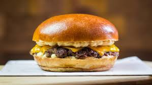

Smash Burger

Description
Smash Burger is a simple well known burger containing 2 meat patties, cheese, caramilized onions, and the special sauce.
Ingredients
- 2 meat patties
- 2 slice of cheese
- Worcestershire sauce (or alternatively, soy sauce mixed with a sugar sauce)
- A1 sauce
- Mayonnaise
- Ketchup
- Mustard
- 2 pickles
- Pepper
- Paprika seasoning
- 2 onions
- 2 Burger Buns
Steps
Setup
- Take an iron pan and heat it up.
- Take any meat, cut 2 pieces and, turn it into a round shape.
- Cut your onions into dices.
- Cut your pickles into very tiny pieces.
- Grab a bowl, add the Worcestershire sauce and the A1 sauce and, mix.
Patty
- Put your 2 round meats and, squeeze them until they become a patty.
- Add some pepper and salt.
- Cook for 2-3 min, then flip it.
- Add the mixed Worcestershire + A1 sauce on top of the two patties.
- Add a slice of chesse on each patty.
- Cook for 2-3 min.
Sauce
- Grab a bowl, and add the sliced pickles.
- 2tsp of mayonnaise.
- 1tsp of mustard.
- 2tsp of ketchup.
- 1tsp of Worcestershire sauce.
- 1tsp of paprika seasoning
- Mix together.
Caramilized Onions
- Add some oil into an iron pan
- Add diced onions.
- Cook for atleast 25-30 min.
Making the Burger
- Start with a burger bun.
- Add 2 cooked meat patties with the cheese on top of them.
- Add caramilized onions.
- Add the sauce on top.
- Add another burger bun.